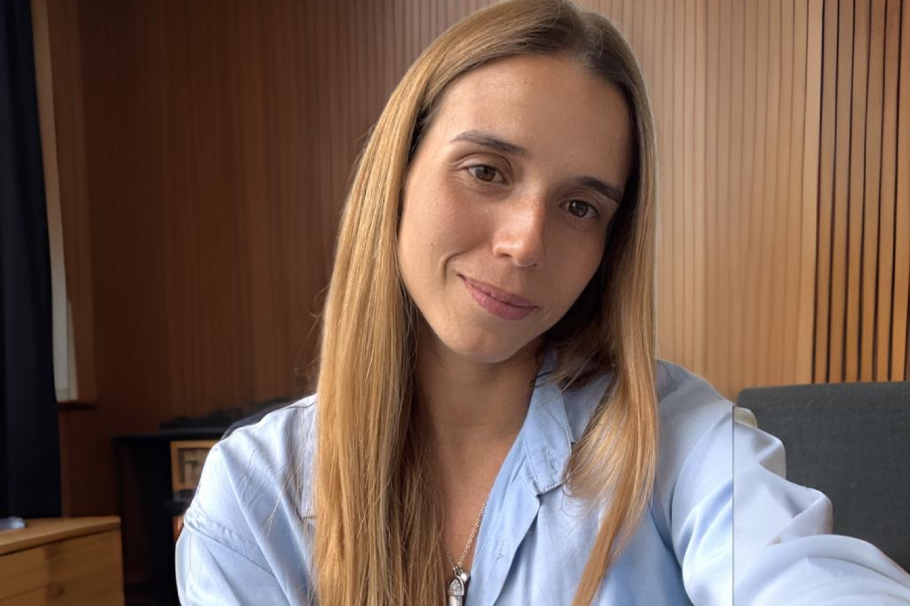
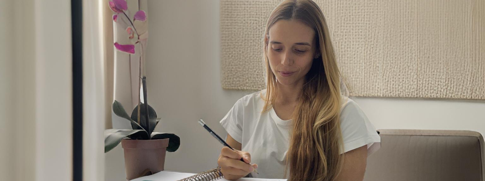

Ansiedad y ataques de pánico
Cuando la preocupación o el miedo empiezan a limitar tu día a día.
Psicóloga en Caracas · Presencial y online
Soy Verónica Socas, psicóloga egresada de la Universidad Central de Venezuela. Acompaño a adolescentes y adultos en procesos de ansiedad, estrés, autoestima, duelo, relaciones y bienestar emocional.

Motivos de consulta
No necesitas tener todo claro para comenzar. La primera conversación también puede ayudarte a poner en palabras lo que estás viviendo.
Cuando la preocupación o el miedo empiezan a limitar tu día a día.
Para comprender la sobrecarga y recuperar un ritmo más sostenible.
Un proceso para relacionarte contigo con mayor claridad y cuidado.
Acompañamiento para transitar cambios, separaciones y ausencias.
Para revisar vínculos, límites y patrones que generan malestar.
Comprender tus emociones y encontrar nuevas formas de responder.
Cuando la tristeza, la apatía o el desánimo se mantienen.
Orientación ante conflictos y dificultades con adolescentes.

Una atención cercana, profesional y sin juicios.Sobre mí
Soy psicóloga egresada de la Universidad Central de Venezuela, con aproximadamente cinco años de experiencia. Trabajo con adolescentes y adultos, de manera presencial en Caracas y también online.
Mi propósito es ofrecer un espacio profesional, seguro y sin juicios donde puedas comprender lo que sientes, reconocer tus recursos y avanzar a tu propio ritmo.
Tu primera consulta
Elige una modalidad y un horario disponible en GiorSalud.
Conversamos sobre lo que estás viviendo y aquello que te gustaría trabajar.
Definimos juntos un acompañamiento adaptado a tus necesidades.
Dos modalidades
Atención presencial en la zona de Santa Paula, El Cafetal, municipio Baruta. La referencia exacta se confirma al reservar.
Centro Profesional Santa PaulaSesiones por videollamada desde un lugar privado y tranquilo. Una opción si vives fuera de Caracas, viajas o prefieres evitar traslados.
Antes de comenzar
Puedes buscar apoyo cuando una situación, emoción o relación te genera malestar, se repite o interfiere con tu vida. No necesitas esperar a que sea “grave”.
Es una conversación para conocer qué estás viviendo, qué te gustaría trabajar y resolver tus dudas antes de decidir cómo continuar.
La duración exacta debe confirmarse con Verónica al reservar, pues puede depender de la modalidad y el tipo de consulta.
Sí. Verónica ofrece atención online para adolescentes y adultos, además de consultas presenciales en Caracas.
Sí. Verónica trabaja con adolescentes y adultos, y también ofrece orientación a padres.
Dar el primer paso
Una primera conversación puede ayudarte a comprender lo que necesitas y decidir cómo continuar.